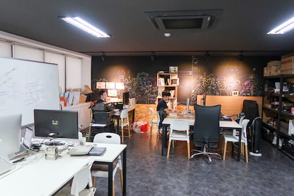

大人になってから自由を手にする方法、または話題性とキャリア資本の重要さ
Posted on 2017-09-07(木) in Career

自分も今年で３５歳になったのだが、最近になって特に、そろそろ本気で「あたまがちょっとおかしい」と周りから思われるような、少し大きなことをやっていかないと、割と「普通の人」で人生がいつの間にか終わってしまうのではという危機感が常にある。その一環として、今年は「韓国に一ヶ月滞在して、インタビューを受けることができるぐらい韓国語を上達させる」という目標を立てて、８月頭に実際に実行に移した。今日でアメリカに帰ってきて２週間ほど経つが、この「ミニプロジェクト」を企画して本当に良かったと思っているので、企画・実行するにあたって、考えたことや気づいたことなどを日記も兼ねて書いておきたい。
「ちょっと韓国行ってくる、しかも一ヶ月」
自分は今、Duolingo という、世界最大の外国語学習アプリを開発しているアメリカのスタートアップで、ソフトウェアエンジニア兼リサーチサイエンティストとして働いている。普段は、自分の自然言語処理や機械学習の専門を活かして、データ解析や英語検定試験の開発などのプロジェクトに主に関わっているのだけど、外国語学習や教育、特にアジアの言語が好きなこともあり、今年５月に Duolingo からリリースした日本語コースの設計では中心的な役割を果たした。そこで得られた知見を活用して、ちょうどその時点で既に開発中であった韓国語のコースに自ら関わり始めたのが事の発端である。韓国語は前から興味があり少しだけ勉強していて、もっと真剣に勉強したいとずっと思っていたという自分の興味にも合っていた。
また、弊社はマーケティングにほとんど予算を使わないことで有名で、凄腕の広報チームが、弊社 CEO や VP をはじめとした社員のトークやインタビュー、目新しい機能やアプリなどのリリースをネタにして、TechCrunch など米国大手テック系のメディアに取り上げてもらってバズらせるのが非常に上手い。今回も、韓国滞在および韓国語コースのローンチに合わせて、大手メディアにインタビューしてもらおうという目論見もあって、この時期に滞在を決めたというわけだ。
はじめは、韓国語の学習プログラムでは名高い延世大学などの夏季短期語学プログラムに３週間ほど参加しようとも思っていたのだが、集団で外国語の授業を受けるのが個人的にあまり好きではないことと、上記のインタビューやトークなどの仕事も同時にこなしたいこともあって、４週間弱、個人レッスンやホームステイを通じて韓国語を勉強しながら、リモートで働くことに決めた。
Duolingoは、「世界中のすべての人々に良質の教育をあまねく無料で提供する」ことをミッションにしている会社だけあって、社員がこうして外国語を学ぶことに寛容で、部分的に手当まで出るので、上司も割とあっさりと二つ返事でＯＫしてくれたのはありがたいことだった。もちろん、こうしてコースの開発とローンチ、そして個人的興味のタイミングをうまく調整した結果であって、単に１ヶ月旅行に行ってきます、ではきっと通らなかっただろう。
ノマド的な働き方を実現するのは、実はとても難しい
韓国に行ってから出会った色々な人の目には、アメリカの割と名の知れたスタートアップで働きながら、こうして旅行も兼ねながらノマド的に働いている自分が、かなり気楽で羨ましい身分に映ったようで、どうしたらそのような働き方ができるのかという興味を持ってくれた人も居た。この記事は、その質問に対するある種の答えでもある。
確かに、韓国、特にソウルは、電源とWi-Fi完備のカフェが至るところにあり、ノマド的な働き方をするにはかなり適した都市だと思う。といっても、休暇を取って来ているわけではないので、韓国語の勉強と平行して、昼間はアメリカ本社側の通常の仕事に加えて、地元の記者に会ってインタビューを受けたり、企業や大学でのトークをこなしたりして、夜中はアメリカ側とミーティングなどでスケジュールが一杯という、けっこうハードな滞在だった。
このように、一見気楽に見える「ノマド的な働き方」を成功させるのは、実はとても難しい。ノマドワーカーというと、例えばタイのチェンマイとかインドネシアのバリ島のような物価が割と安くて気候も良いところで、ブログを書いてアフィリエイトとかで悠々と暮らしているイメージがあるが、そのほとんどがあまり続かないか、続いても鳴かず飛ばずなのではないかという気がしている。その理由は、「まず自由や情熱を追い求めてから」「他人と代替不可能な特越した能力をつけたり経験を積もうとする」からである。他人と代替不可能な卓越した能力や経験が無いので、それに対してお金を払ってくれる人を探すのが難しいからだ。その順序を変えて、「過去の実績や自分の適性を認めてもらってから、少し枠にとらわれない働き方を模索する」だけで、物事はずっとうまく進む。
「情熱を持てる仕事を探せば幸せになれる」のウソ
自分がこのような「一ヶ月韓国滞在」プロジェクトを思いついた大きなきっかけになったのが、Cal Newport 氏の著書である "So Good They Can't Ignore You" である。タイトルを直訳すると「無視できないぐらい上手くなれ」ということであるが、この本は、自分がこれまで読んだ仕事術・自己啓発系の書籍の中でも、自分の考え方や行動に最も大きなインパクトを与えたものだと言える。本書では、
「情熱を持てる仕事」すなわちいわゆる「天職」と言われているような仕事を見つけさえすれば、皆幸せになれる
という「天職仮説」を全面的に否定している。スティーブ・ジョブズをはじめ、各方面で成功している人をよくみると、そのように「天職」をまず見つけ、そこからキャリアを築いていった人はまれであり、逆に、他の人では代替不可能な能力や経験をまず身に着けながら、少しずつキャリアを築いていったという例が多いのに気づく。
その逆に、上記のような「ノマドブロガー」はどうか。本書の中にも、そのような「順番を間違えてしまった」例が数多く登場する。本書に登場するある２５歳の男性は、９時から５時まで普通の会社で働き、自分の自由になるお金や時間がほとんど無いことにうんざりしてしまい、「自分の本当の情熱」を探すために仕事を辞め、世界に旅に出る。俗に言う脱サラして、自分でビジネスを始めることによって、ライフスタイは自分で自由に「デザイン」できるのだということを世界に知ってほしかったというわけだ。
ここでの問題は、この男性の「ビジネス」とは、他の多くの「ノマドワーカー」と同様、「ノマドワーカー」に関するブログだけだったということだ。このような商品に価値がほとんど無いということは明らかであろう。ここでも、「他人では代替不可能な能力」をないがしろにして、「他人でも代替可能な情熱」を優先したばかりに、このブログに読者が定着することはなかった。そのうち、その点を嘆く記事が目につくようになったが、ある記事には、「安定したブログ読者層を築く方法」というタイトルと共に「2. エネルギーを発揮する」「4. 読者に感謝を示す」などのとりとめのない言葉が並んでいたが、最も大切なこと、すなわち、「読者がお金を払いたくなるようなコンテンツを提供する」という点が抜けていた。その後、この男性のブログはすぐに更新が滞りがちになった。最後に著者が彼のブログをチェックした時には、４ヶ月以上も更新が無いままであったという。
「キャリア資本」と「話題性」の重要さ
この「他人では代替不可能な能力や経験」を、著者は「キャリア資本」と呼んでいる。このキャリア資本は、仕事に対する情熱や自由に先立つもので、日本的な「職人芸」に代表される、「意図的な練習 (deliberate practice)」によって培われるものだとする。このキャリア資本を積みかさね、かつ、タイミングや、市場に需要があるかなどの要因も慎重に吟味しながら、仕事やプロジェクトを決めるべきだとのことだ。
また、ミッション志向のプロジェクトには、以下の引用 (本書 p.192) にある、「話題性 (remarkability)」も欠かせない。これは、自分も普段からなんとなく意識していた点を見事に明文化してくれくれているので、以下にそのまま引用したい：
「話題性の法則」・・・ ミッション志向のプロジェクトを成功させるためには、以下の２つの観点から「話題性」を兼ね備えていなければならない。一つは、聞いた人がそのプロジェクトのことを話題にして他の人に伝えたくてしょうがないようなものであること。もう一つは、そのような口コミが可能である場所でプロジェクトを実施すること。
言い換えると、プロジェクトの「印象に残る度」「キャッチーさ」などの側面も非常に重要ということである。この「話題性の法則」を聞いてすぐ頭に浮かぶのが、Cal Newport 氏と共に活躍するブロガーである Scott Young 氏によるプロジェクトである、「一年間外国語生活プロジェクト」 である。このプロジェクトで Young 氏は、スペイン・ブラジル・中国・韓国を旅しながら、現地語を学ぶことによって、なるべく英語（彼の母語）を話さないように一年間生活したというのだ。実は、今回の自分の「一ヶ月韓国滞在」プロジェクトも、彼のこのアイデアにかなり影響されている。この記事で、彼なりの「プロジェクトの選び方」が紹介されている。この記事の中で、彼も何度も「compelling (したくてしょうがない)」という言葉を使っているのが印象深い。
「ミニプロジェクト」を成功させるには
ということで、上記をまとめると、今回のような「ミニプロジェクト」を成功させ、自由を手に入れるには、以下の観点が重要であると言えるだろう：
- あらかじめ代替不可能な能力や経験を積んでおく、もしくは、上記 Young 氏のように、プロジェクト自体を通じてそのような能力や経験を積めるようなものを考える
- プロジェクト自体を、他の人のためになる、他の人がお金を払ってくれるようなものにできるようにする
- 「話題性」をはじめから意識する。友人知人が、噂してやまないようなプロジェクトを考える。「ちょっとあたまがおかしい」と思われるぐらいがちょうどいい。
最後に
結果的に、当初の目的であった「韓国語でインタビューを受けられるぐらい」には韓国語は上達しなかったのだけど、それでも、準備期間も含めてたった３ヶ月で、オンラインで教えてもらっている先生に驚かれるぐらい韓国語力が向上したので、個人的には今回のミニプロジェクトは大成功だと言って良い。そして、もう一つの大切な目標であった Duolingo の韓国語コースも、本日、予定通りに達成することができ、数多くの大手メディアに興味を持ってもらえたようで良かった。
最後に、韓国滞在中に使わせてもらった、とても素敵なコワーキングスペース Hive Arena の代表 Jongjin と Hyekung、そして、素敵なホームステイ先の Candy House の家族の皆さんにはとてもお世話になった。もしソウルに行く機会があれば、ぜひチェックしてみることをオススメする。